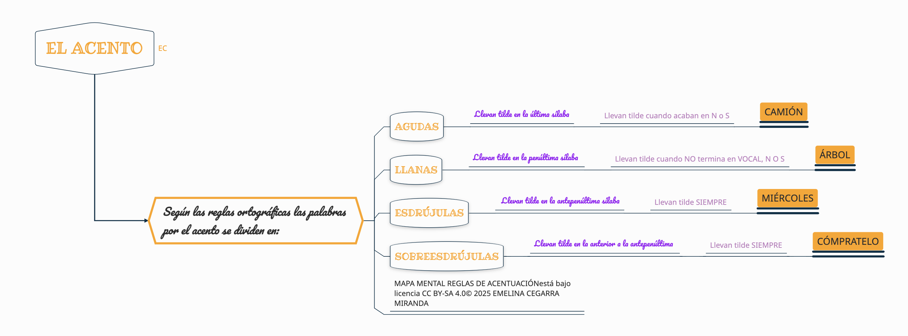

PALABRAS AGUDAS, LLANAS Y ESDRÚJULAS Completa con las palabras correspondientes. Palabras agudas: son aquellas cuya sílaba tónica se encuentra en la Rellenar huecos (1):JXUwMGEyJXUwMDk2JXUwMDE4JXUwMDFkJXUwMDA0JXUwMDBj posición. Llevan tilde solamente las que acaban en Rellenar huecos (2):JXUwMDM2JXUwMDQyJXUwMDBjJXUwMDUzJXUwMDUzJXUwMDRmJXUwMDRmJXUwMDU2JXUwMDE5JXUw MDBjJXUwMDAyJXUwMDBkJXUwMDQy Palabras Rellenar huecos (3):JXUwMDM0JXUwMDAwJXUwMDBkJXUwMDBmJXUwMDBmJXUwMDEy : su sílaba tónica se encuentra en la Rellenar huecos (4):JXUwMDI4JXUwMDE1JXUwMDBiJXUwMDk0JXUwMDk2JXUwMDE4JXUwMDFkJXUwMDA0JXUwMDBj posición. Llevan tilde aquellas que no acaban en s, n o vocal. Palabras Rellenar huecos (5):JXUwMDNkJXUwMDE2JXUwMDE3JXUwMDE2JXUwMDg4JXUwMDkwJXUwMDFmJXUwMDE5JXUwMDBkJXUw MDEy : la sílaba tónica se encuentra en la Rellenar huecos (6):JXUwMDM5JXUwMDBmJXUwMDFhJXUwMDExJXUwMDE1JXUwMDE1JXUwMDBiJXUwMDk0JXUwMDk2JXUw MDE4JXUwMDFkJXUwMDA0JXUwMDBj posición. Rellenar huecos (7):JXUwMDBjJXUwMDNiJXUwMDBiJXUwMDA1JXUwMDEy las palabras Rellenar huecos (8):JXUwMDNkJXUwMDE2JXUwMDE3JXUwMDE2JXUwMDg4JXUwMDkwJXUwMDFmJXUwMDE5JXUwMDBkJXUw MDEy llevan tilde. También están las palabras sobreesdrújulas, las cuales llevan Rellenar huecos (9):JXUwMDJiJXUwMDFhJXUwMDBjJXUwMDA4JXUwMDFkJXUwMDAyJXUwMDE3 tilde también. Habilitar JavaScript Recuerda lo que hemos estado trabajando en clase, si no recuerdas algo, puedes preguntarle a la seño o consultar nuestro mapa mental. 